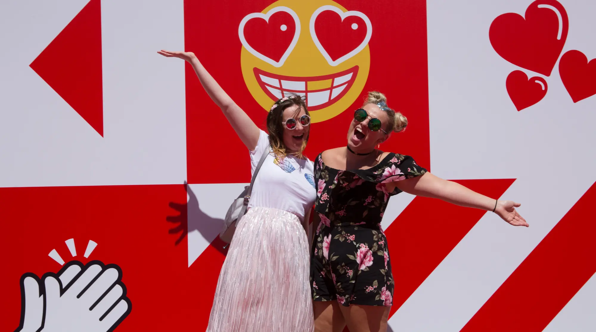
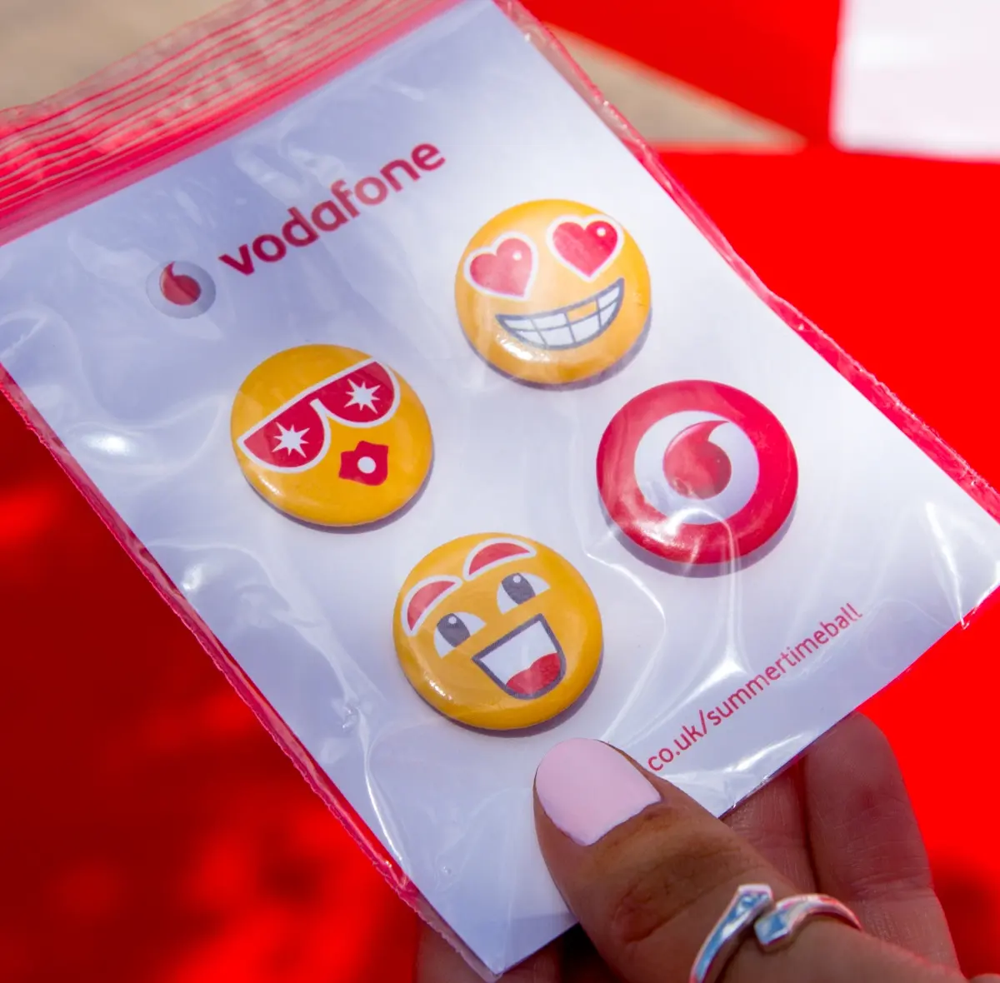
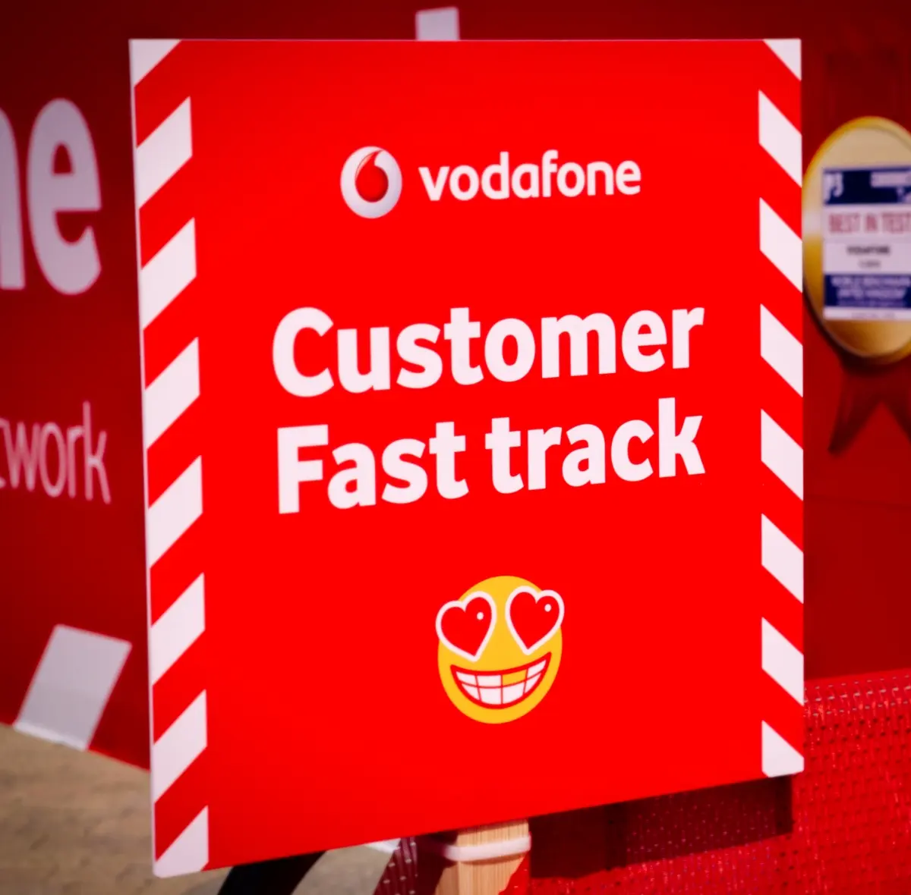
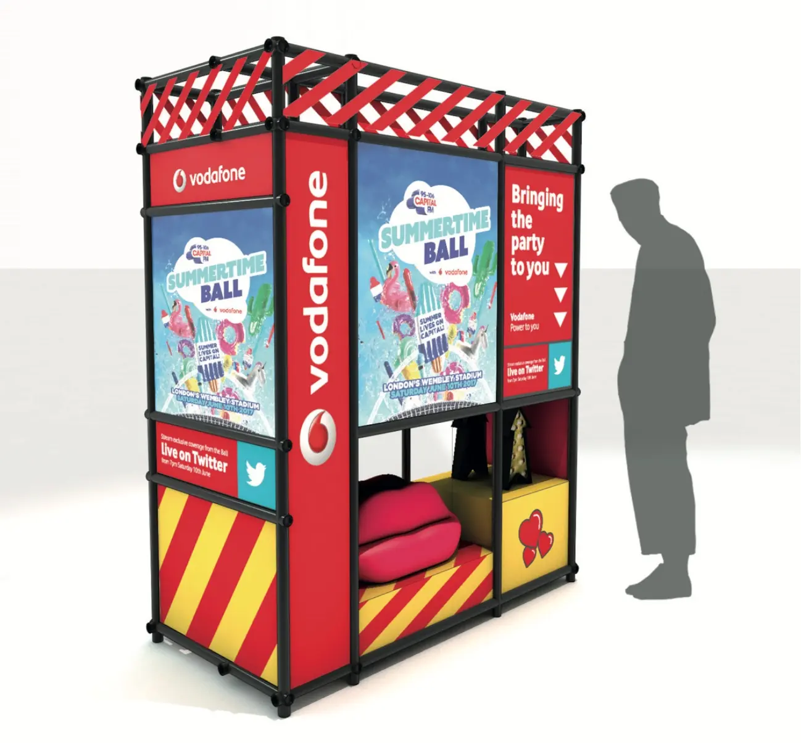
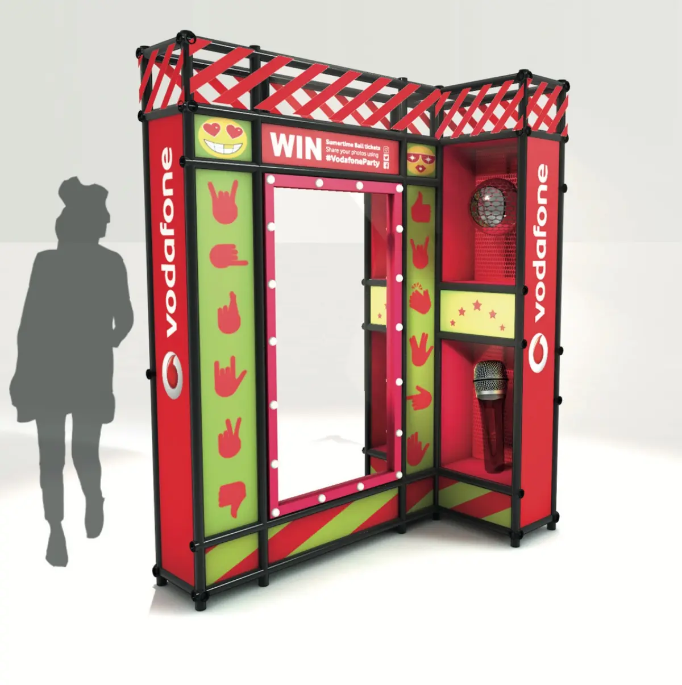
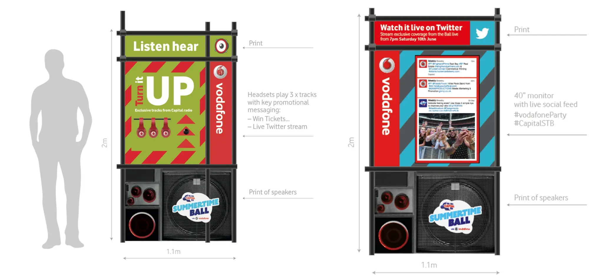
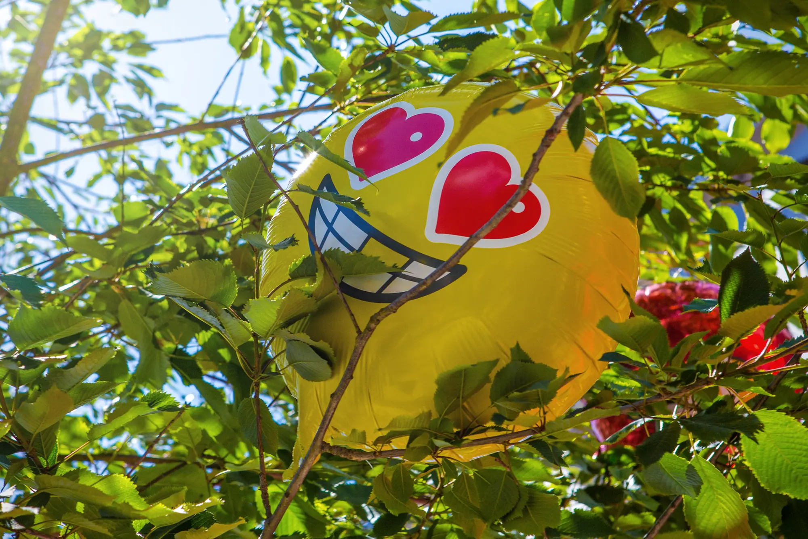

Experiential
Vodafone Summertime Ball
Creating a party, before the party @ Capital Radios Summertime Ball. Concepting and overseeing the creation of a mini-festival at the entrance to Wembley with DJs, make-up booths, red carpet experiences and much more. More than 5000 partygoers.

The work






